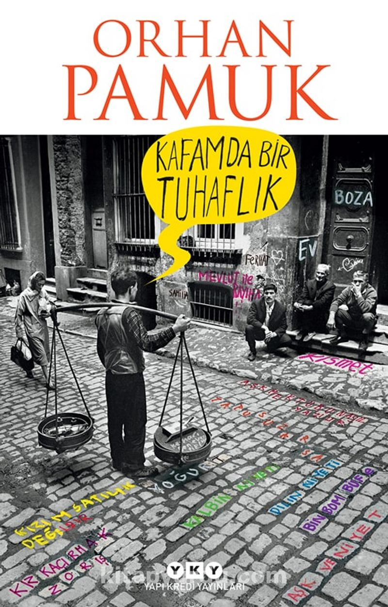

"Kafamda Bir Tuhaflık" Orhan Pamuk'un 2014 yılında yayımlanan romanıdır. İstanbul ve İzmir'de geçen hikaye, kendisine Mennan Bey adını veren bir zengin iş adamının ağzından anlatılır. Roman, aşk, entrika, şehir hayatı ve modern Türkiye'nin çelişkileri gibi temaları ele alır. Ayrıca, yazarın kendisiyle ilgili de bazı ipuçları verir.
